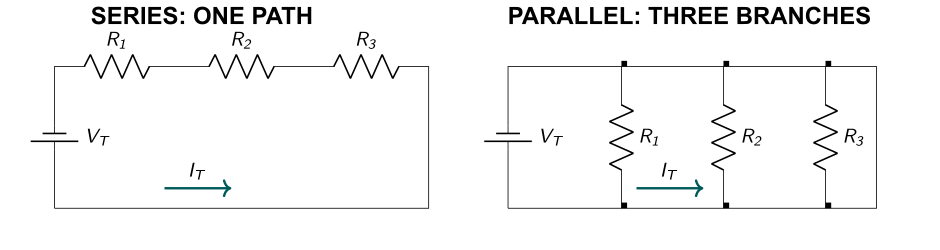
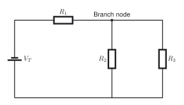
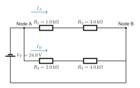
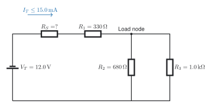

Series-Parallel Circuits
You will identify series and parallel groups, reduce a mixed circuit one group at a time, calculate the total values, and then work back to each resistor. This is useful when one protected power source feeds several loads in a robot, vehicle, computer, or sensor system.
Used in college or university: circuit laboratories, electronics, robotics, instrumentation, and preparation for Kirchhoff’s laws. The same circuit pattern lets cars and robots power several loads from one protected source.
Where you see it: A car uses a fuse and switch to feed parallel lamps or control modules. A robot uses one protected supply for sensors, indicators, and control boards.
Class materials
- Teaching slides
- Make a copy of the student handout
- TEJ Electronics Quick Reference
- General Schematic and GUESS handout
- Teacher answer key: restricted
Chapter and experiment support
- Grob’s Basic Electronics, Chapter 6: Series-Parallel Circuits - read Sections 6-1 to 6-7, pages 174-194. [1, Ch. 6]
- Grob Problems Manual - Chapter 6, pages 79-91, has analysis, random-unknown, and Wheatstone-bridge practice.
- Experiment 6-1: Series-Parallel Circuits - Resistance
- Experiment 6-2: Series-Parallel Circuits - Networks
- Experiment 6-3: Series-Parallel Circuits - Analysis
Start with a real system
A robot may have a fuse, switch, and current-limiting resistor in series with several parallel loads. A vehicle uses the same pattern when one protected supply feeds lamps, sensors, or control modules. The series parts affect every load; each parallel branch still receives the same branch voltage.
For an engaging introduction, watch ElectroBOOM101-005, then use The Organic Chemistry Tutor’s series and parallel explanation or Khan Academy’s circuit review for the calculation steps.
Identify the connections
Components are in series when the same current must pass through them. Components are in parallel when both ends connect to the same two nodes. Trace nodes and current paths; do not decide from visual appearance alone.

Rules and equations
For a series group, current is common, voltage drops add, and resistance adds:
\[ I_T=I_1=I_2=\cdots \tag{1}\]
\[ V_T=\sum_{k=1}^{n}V_k \tag{2}\]
\[ R_{\mathrm{series}}=\sum_{k=1}^{n}R_k \tag{3}\]
For a parallel group, voltage is common, branch currents add, and reciprocal resistance adds:
\[ V_T=V_1=V_2=\cdots \tag{4}\]
\[ I_T=\sum_{k=1}^{n}I_k \tag{5}\]
\[ \frac{1}{R_{\mathrm{parallel}}} =\sum_{k=1}^{n}\frac{1}{R_k} \tag{6}\]
For exactly two parallel resistors:
\[ R_{\mathrm{parallel}}=\frac{R_aR_b}{R_a+R_b} \tag{7}\]
For any resistor, use Ohm’s law and power:
\[ V_k=I_kR_k \tag{8}\]
\[ P_k=V_kI_k=I_k^2R_k=\frac{V_k^2}{R_k} \tag{9}\]
Reduce, solve, expand, and check
- Mark one true series or parallel group.
- Replace it with an equivalent resistance and redraw the whole circuit.
- Repeat until only total resistance remains.
- Solve the equivalent circuit with \(I_T=V_T/R_T\).
- Work backward. Use common current for series parts and common voltage for parallel branches.
- Check that branch currents add, voltage drops add around a path, and component powers add to total power.

Guided example
A \(10.0\,\mathrm{V}\) source supplies \(R_1=1.0\,\mathrm{k\Omega}\) in series with \(R_2=2.0\,\mathrm{k\Omega}\) and \(R_3=2.0\,\mathrm{k\Omega}\) in parallel.
Given
\[ V_T=10.0\,\mathrm{V},\qquad R_1=1.0\,\mathrm{k\Omega},\qquad R_2=R_3=2.0\,\mathrm{k\Omega} \tag{10}\]
Unknowns
\[ R_{23},\ R_T,\ I_T,\ V_1,\ V_{23},\ I_2,\ I_3,\ P_T \tag{11}\]
General equations
\[ R_{23}=\frac{R_2R_3}{R_2+R_3},\qquad R_T=R_1+R_{23},\qquad I_T=\frac{V_T}{R_T} \tag{12}\]
\[ V_1=I_TR_1,\qquad V_{23}=V_T-V_1,\qquad I_2=\frac{V_{23}}{R_2},\qquad I_3=\frac{V_{23}}{R_3} \tag{13}\]
Substitute and solve
\[ R_{23}=\frac{(2.0\,\mathrm{k\Omega})(2.0\,\mathrm{k\Omega})} {2.0\,\mathrm{k\Omega}+2.0\,\mathrm{k\Omega}} =1.0\,\mathrm{k\Omega} \tag{14}\]
\[ R_T=1.0\,\mathrm{k\Omega}+1.0\,\mathrm{k\Omega} =2.0\,\mathrm{k\Omega} \tag{15}\]
\[ I_T=\frac{10.0\,\mathrm{V}}{2.0\,\mathrm{k\Omega}} =5.0\,\mathrm{mA} \tag{16}\]
\[ V_1=(5.0\,\mathrm{mA})(1.0\,\mathrm{k\Omega})=5.0\,\mathrm{V} \tag{17}\]
\[ V_{23}=10.0\,\mathrm{V}-5.0\,\mathrm{V}=5.0\,\mathrm{V} \tag{18}\]
\[ I_2=I_3=\frac{5.0\,\mathrm{V}}{2.0\,\mathrm{k\Omega}} =2.5\,\mathrm{mA} \tag{19}\]
\[ P_T=V_TI_T=(10.0\,\mathrm{V})(5.0\,\mathrm{mA}) =50\,\mathrm{mW} \tag{20}\]
Calculator entries
(2 EXP 3 × 2 EXP 3) ÷ (2 EXP 3 + 2 EXP 3)
10 ÷ (2 EXP 3)
5 ÷ (2 EXP 3)Check: \(I_2+I_3=5.0\,\mathrm{mA}=I_T\) and \(V_1+V_{23}=10.0\,\mathrm{V}=V_T\).
Student questions
Use the student handout for the fillable GUESS tables and work space.
Question 1: reduce one parallel group
A \(12.0\,\mathrm{V}\) source supplies \(R_1=1.0\,\mathrm{k\Omega}\) in series with \(R_2=2.0\,\mathrm{k\Omega}\) and \(R_3=2.0\,\mathrm{k\Omega}\) in parallel. Find the equivalent resistance, total current, all resistor voltages and currents, and total power.
Question 2: unequal parallel branches
An \(18.0\,\mathrm{V}\) source supplies \(R_1=3.0\,\mathrm{k\Omega}\) in series with \(R_2=6.0\,\mathrm{k\Omega}\) and \(R_3=3.0\,\mathrm{k\Omega}\) in parallel. Find \(R_{23}\), \(R_T\), \(I_T\), \(V_1\), \(V_{23}\), \(I_2\), \(I_3\), and \(P_T\). Check current and voltage.
Question 3: two series branches in parallel
A \(24.0\,\mathrm{V}\) source is connected across two branches. Branch A has \(R_1=1.0\,\mathrm{k\Omega}\) and \(R_2=3.0\,\mathrm{k\Omega}\) in series. Branch B has \(R_3=2.0\,\mathrm{k\Omega}\) and \(R_4=4.0\,\mathrm{k\Omega}\) in series. Find the branch resistances and currents, every resistor voltage, total current, equivalent resistance, and total power.

Question 4: find an unknown branch resistor
A \(20.0\,\mathrm{V}\) source supplies \(R_1=1.2\,\mathrm{k\Omega}\) in series with a parallel group. One branch is \(R_2=2.4\,\mathrm{k\Omega}\) and the other is an unknown \(R_3\). The source current is \(10.0\,\mathrm{mA}\). Find \(V_1\), \(V_{23}\), \(I_2\), \(I_3\), \(R_3\), and \(R_T\).
Question 5: current-limit design
A \(12.0\,\mathrm{V}\) source supplies \(R_S\), \(R_1=330\,\mathrm{\Omega}\), and a parallel load made from \(R_2=680\,\mathrm{\Omega}\) and \(R_3=1.0\,\mathrm{k\Omega}\). Find the minimum \(R_S\) that keeps source current at or below \(15.0\,\mathrm{mA}\). Select the next safe standard 5% value, then calculate current, load voltage, branch currents, resistor powers, and suitable power ratings.

Worked student models
Questions 2 and 4 are provided as models. Complete Questions 1, 3, and 5 independently.
Given: \(V_T=18.0\,\mathrm{V}\), \(R_1=3.0\,\mathrm{k\Omega}\), \(R_2=6.0\,\mathrm{k\Omega}\), \(R_3=3.0\,\mathrm{k\Omega}\).
Unknowns: \(R_{23}\), \(R_T\), \(I_T\), \(V_1\), \(V_{23}\), \(I_2\), \(I_3\), \(P_T\).
General equations: use Equations Equation 7, Equation 3, Equation 8, Equation 5, and Equation 9.
Substitute and solve
\[ R_{23}=\frac{(6.0\,\mathrm{k\Omega})(3.0\,\mathrm{k\Omega})} {6.0\,\mathrm{k\Omega}+3.0\,\mathrm{k\Omega}} =2.0\,\mathrm{k\Omega} \tag{21}\]
\[ R_T=3.0\,\mathrm{k\Omega}+2.0\,\mathrm{k\Omega} =5.0\,\mathrm{k\Omega} \tag{22}\]
\[ I_T=\frac{18.0\,\mathrm{V}}{5.0\,\mathrm{k\Omega}} =3.60\,\mathrm{mA} \tag{23}\]
\[ V_1=(3.60\,\mathrm{mA})(3.0\,\mathrm{k\Omega}) =10.8\,\mathrm{V} \tag{24}\]
\[ V_{23}=18.0\,\mathrm{V}-10.8\,\mathrm{V} =7.2\,\mathrm{V} \tag{25}\]
\[ I_2=\frac{7.2\,\mathrm{V}}{6.0\,\mathrm{k\Omega}} =1.20\,\mathrm{mA},\qquad I_3=\frac{7.2\,\mathrm{V}}{3.0\,\mathrm{k\Omega}} =2.40\,\mathrm{mA} \tag{26}\]
\[ P_T=(18.0\,\mathrm{V})(3.60\,\mathrm{mA}) =64.8\,\mathrm{mW} \tag{27}\]
Statement: \(R_{23}=2.0\,\mathrm{k\Omega}\), \(R_T=5.0\,\mathrm{k\Omega}\), \(I_T=3.60\,\mathrm{mA}\), \(V_1=10.8\,\mathrm{V}\), \(V_{23}=7.2\,\mathrm{V}\), \(I_2=1.20\,\mathrm{mA}\), \(I_3=2.40\,\mathrm{mA}\), and \(P_T=64.8\,\mathrm{mW}\).
Check: \(I_2+I_3=I_T\) and \(V_1+V_{23}=V_T\).
Given: \(V_T=20.0\,\mathrm{V}\), \(R_1=1.2\,\mathrm{k\Omega}\), \(R_2=2.4\,\mathrm{k\Omega}\), \(I_T=10.0\,\mathrm{mA}\).
Unknowns: \(V_1\), \(V_{23}\), \(I_2\), \(I_3\), \(R_3\), \(R_T\).
General equations
\[ V_1=I_TR_1,\qquad V_{23}=V_T-V_1,\qquad I_2=\frac{V_{23}}{R_2} \tag{28}\]
\[ I_3=I_T-I_2,\qquad R_3=\frac{V_{23}}{I_3},\qquad R_T=\frac{V_T}{I_T} \tag{29}\]
Substitute and solve
\[ V_1=(10.0\,\mathrm{mA})(1.2\,\mathrm{k\Omega}) =12.0\,\mathrm{V} \tag{30}\]
\[ V_{23}=20.0\,\mathrm{V}-12.0\,\mathrm{V} =8.0\,\mathrm{V} \tag{31}\]
\[ I_2=\frac{8.0\,\mathrm{V}}{2.4\,\mathrm{k\Omega}} =3.333333\ldots\,\mathrm{mA} \tag{32}\]
\[ I_3=10.0\,\mathrm{mA}-3.333333\ldots\,\mathrm{mA} =6.666667\ldots\,\mathrm{mA} \tag{33}\]
\[ R_3=\frac{8.0\,\mathrm{V}}{6.666667\,\mathrm{mA}} =1.20\,\mathrm{k\Omega} \tag{34}\]
\[ R_T=\frac{20.0\,\mathrm{V}}{10.0\,\mathrm{mA}} =2.00\,\mathrm{k\Omega} \tag{35}\]
Statement: \(V_1=12.0\,\mathrm{V}\), \(V_{23}=8.0\,\mathrm{V}\), \(I_2=3.33\,\mathrm{mA}\), \(I_3=6.67\,\mathrm{mA}\), \(R_3=1.20\,\mathrm{k\Omega}\), and \(R_T=2.00\,\mathrm{k\Omega}\).
Check: \(I_2+I_3=10.0\,\mathrm{mA}=I_T\).
Lab connection
Use Experiment 6-1 to verify equivalent resistance before applying power. Continue with Experiment 6-2 or Experiment 6-3 to compare calculated and measured values.
Equipment: breadboard, digital multimeter, low-voltage direct-current supply, and leads.
Consumables: the resistor values specified by the selected experiment.
Evidence: circuit photo, measured-value table, calculated-value table, percent differences, and one brief explanation of the largest difference.
Safety: switch off the supply before moving components or measuring resistance. Measure current with the meter placed in series, never directly across a source.
Teachers can email Andrew for the complete answer key.